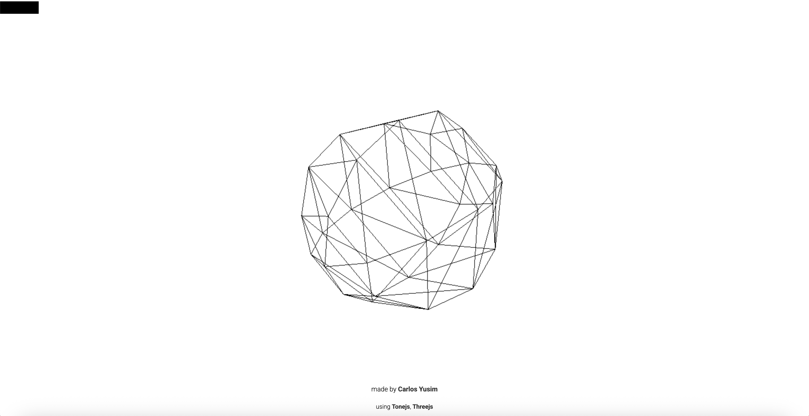
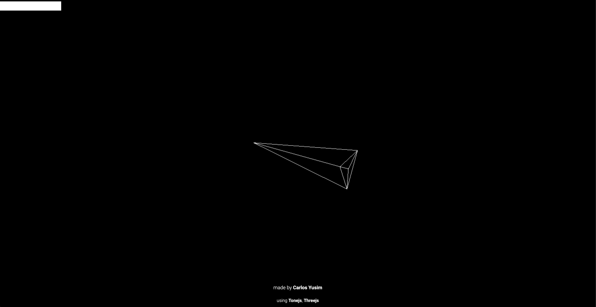
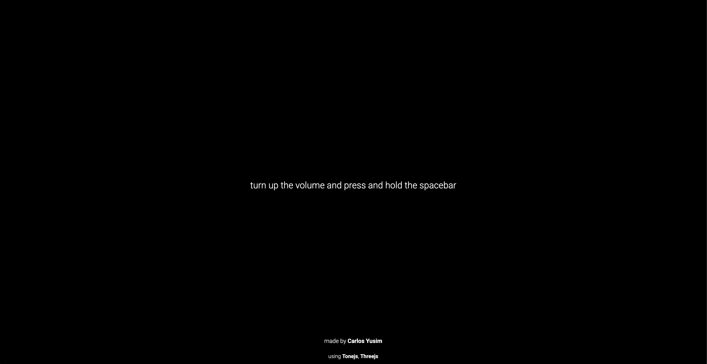

Research UI's:


Information Design
Sequencer 01 uses minimal labels, encouraging experimentation: the “pitch” control lacks a unit of measurement. There are no instructions or descriptions of what each control does. The contrast of green against black and white distinguishes controls, buttons and the playhead from other elements. Line is used to separate groups of related elements, such as the header, clock and transforms.
Holdspace also uses a minimal interface. It gives users some instruction in the form of text, which eventually disappears. This encourages exploration and play. An animated graphic mirrors the sound, helping deliver the aural information. The 3D polygonal shapes in the graphic evoke futuristic, technological themes, reinforcing the experimental electronic music. White space and contrast between black and white draw the user to the text instructions and the graphics. A progress bar at the top of the screen goes forwards when the space bar is held down, and otherwise goes backwards.
While Sequencer 01 and Holdspace are vastly different types of experiences, they both use minimalistic information design to invite play and experimentation from the viewer. However, as Sequencer 01 is a more traditional audio tool, it features more detailed information than Holdspace, an interactive music piece.
Mapping
Many of the controls in Sequencer 01 are mapped to potentiometers, including Pattern, Pitch and Sound. The use of potentiometers in contrast to options such as dropdowns encourages the user to experiment with different options. Reinforcing this, controls such as pitch and shape lack a unit of measurement, prompting the user to experiment rather than to seek precision. There is a 16-step grid sequencer allowing users to manually program sounds, as well as potentiometers for patterns, and randomise, flip, wander and rebound buttons to encourage play.
By contrast, Holdspace uses a single control, the space bar, to allow the user to interact with the song and graphic. The sound and visuals change depending on whether the space bar is held down.
 Sequencer 01 gives the plently of interactivity and control via user extensive mapping, giving them experience of a traditional sequencer. By contrast, Holdspace’s single control aims to add a small dimension of interactivity and control into the music piece.
Characterisation
Sequencer 01’s minimalist monochromatic, design is engineered mainly to communicate the device’s functions, presenting it as an audio tool. The use of a monospaced font evokes aesthetics associated with technology and code, reminding the user that this is an experimental digital media project. The tool’s experimental nature is also expressed through a playful, bright green colour (other tools in the Intersymmetric Works series feature bright pink and blue), inviting the user to play around with the tool.
Holdspace instructs the user via basic instructions in an unobtrusive, basic sans serif font. The decision for all the text to be lowercase makes the instructions sound unauthoritative and calm.
These choices invite the user into the experience, without distracting from the media being presented. The visuals of wireframe, polygonal 3D shapes, evoke themes of technology and the future. The experimental electronic soundtrack also evokes these themes. This invites the user to approach Holdspace with curiosity, characterising it as an experimental experience.
Sequencer 01 and Holdspace both use characterisation to express their experimental nature but in different ways, with Sequencer 01’s use of a monospaced font and playful colours, in contrast to Holdspace’s use of futuristic visuals.
Feedback
Sequencer 01’s buttons change colour upon hovering, and all change colour when engaged except for the play button, which changes to a pause symbol. In addition, the potentiometers change colour while being pressed. In the sequencer grid, when steps are pressed, an X is placed to denote that a sound will play on that beat. While the sequence is playing, a column on the grid represents a play head, providing feedback for the musical output. This helps create a tactile experience for the user, who would benefit from clear feedback for their actions in an audio tool. In addition, the tactile buttons replicate physical devices such as sequencers, which would use physical buttons which provide tactile feedback.
Holdspace features a loading screen with a percentage showing the loading progress. This signals to the viewer that the site may take a long duration to load and gives detailed feedback as to how it is progressing.

The music and animation changes depending on whether the space bar is held down and becomes more intense over the duration on the space bar being pressed. This feedback is used to create an interactive way to experience the music and visuals. The progress bar at the top of the screen demonstrates to the user how far they are into the duration of the work, but with its ability to go backwards, also adds a unique dimension into the experience of consuming time-based media.
As Sequencer 01 and Holdspace are both time-based and musical, they both provide feedback related to duration, with Sequencer 01’s playhead and Holdspace’s progress bar. Holdspace’s progress bar’s property to move backwards or forwards, and Sequencer 01’s playhead’s ability to “wander” and “rebound” highlight the experimental interactions of each site. Holdspace’s minimal feedback in contrast to the many different button animations and other feedback in Sequencer 01 highlights the different purposes of Holdspace as an interactive music piece and Sequencer 01 as an audio toy. This is also reflected in Sequencer 01’s traditional play button behaviour wherein you press play once and the sequence plays. In contrast, Holdspace requires the user to hold space continually to make one audio piece and animation play, and keep it released to play a different audio piece and animation. This reinforces the interactive component of the interactive music piece.